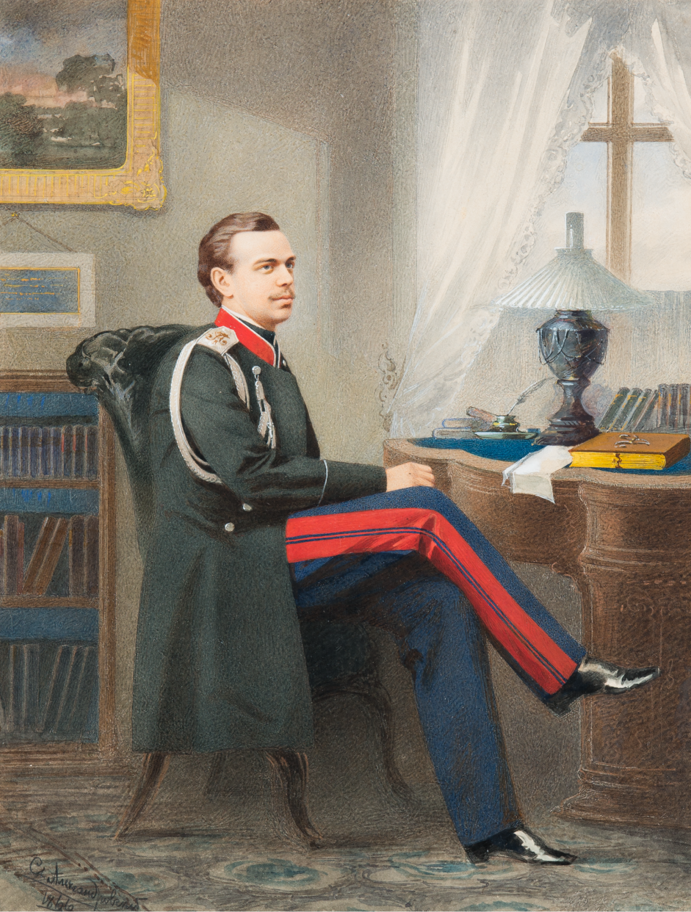
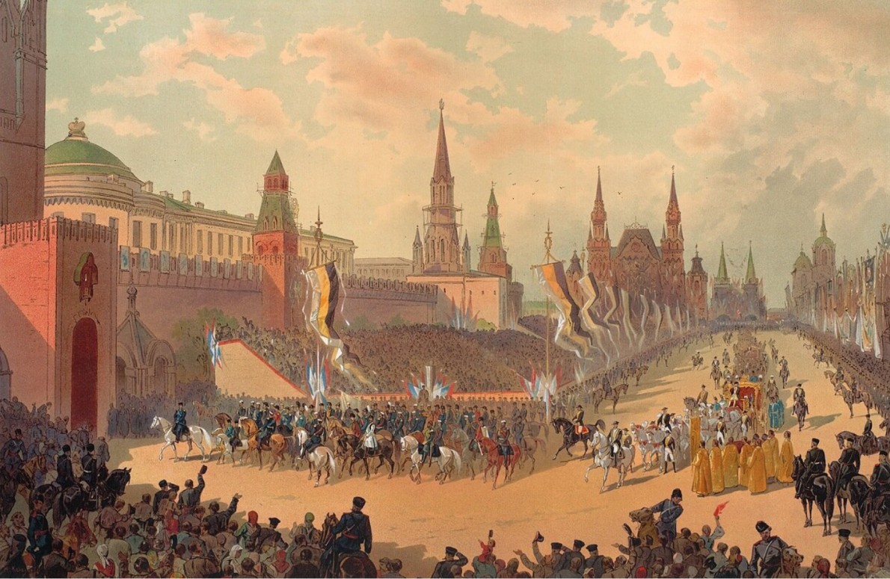
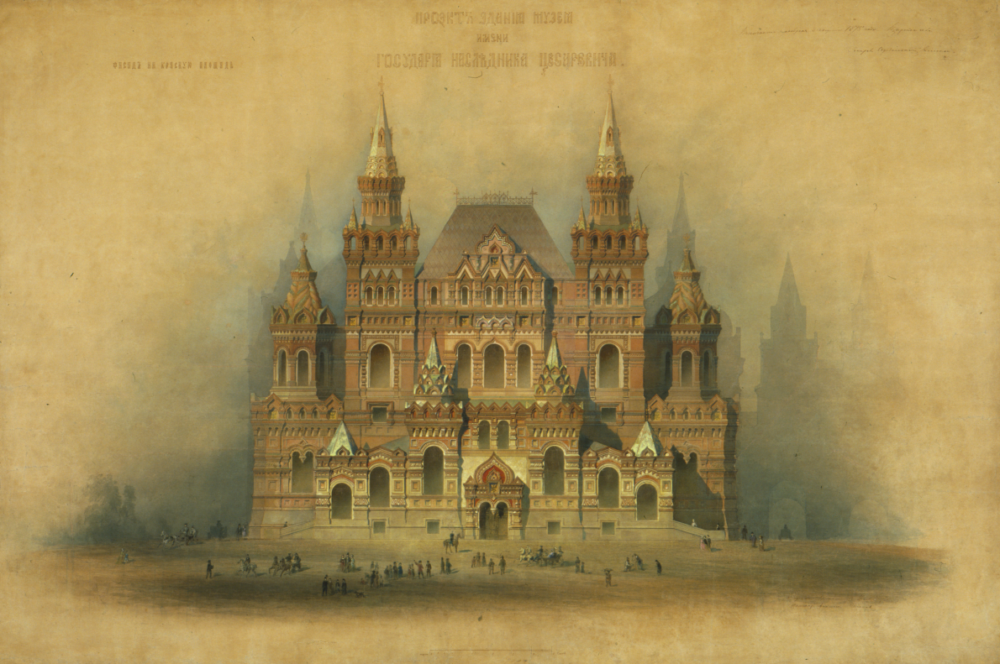

Период правления Александра III характеризуют стабильность внутренней и внешней политики, развитие производительных сил страны, подъем науки и национальной культуры.
Это было недолгое затишье перед бурями и потрясениями начала XX столетия.
Александра III современники заслуженно называли Миротворцем. Он остается единственным монархом России, во время правления которого не было ни одной войны.
Эта мирная передышка самым благотворным образом сказалась на состоянии государства и положении народа.
| I | ДЕТСТВО И ЮНОСТЬ ВЕЛИКОГО КНЯЗЯ | |
| II | СЕМЬЯ ИМПЕРАТОРА | |
| III | ВОСШЕСТВИЕ НА ПРЕСТОЛ | |
| IV | КОРОНАЦИЯ | |
| V | ВНУТРЕННЯЯ ПОЛИТИКА И КОНТРРЕФОРМЫ | |
| VI | ВНЕШНЯЯ ПОЛИТИКА | |
| VII | ПОКРОВИТЕЛЬ ИСКУССТВ |
Будущий российский император Александр III родился 10 марта (26 февраля) 1845 г. в Санкт-Петербурге. Он был вторым сыном императора Александра II и императрицы Марии Александровны и наследником престола не являлся. Занять его должен был старший брат Александра – великий князь Николай Александрович. Мальчика нарекли Александром в честь отца и в память двоюродного деда, глубоко почитавшегося в царской семье Александра I – победителя Наполеона.
Александр получил традиционное для великих князей военно-инженерное образование. В процессе учебы он изучал Закон Божий, математику, историю, русский и иностранный языки, географию, занимался верховой ездой, фехтованием. Среди его наставников были: профессор, ректор Московского университета Сергей Соловьев, Яков Грот, профессор Николаевской академии Генерального штаба полковник Михаил Драгомиров, известный юрист Константин Победоносцев. Великий князь основательно увлекался историей, музыкой, архитектурой и изобразительным искусством, особенно живописью. Основное внимание родителей и педагогов было направлено на образование наследника престола – великого князя Николая (Никсы, как его звали родные). Александра готовили к военной карьере и ничто не предвещало иного развития событий. Но 12 апреля 1865 г. наследник престола цесаревич Николай Александрович скончался от туберкулезного менингита, развившегося впоследствии случайной травмы. «Что за перемена произошла во всей моей жизни в эти часы, и какая страшная ответственность разом свалилась на мои плечи…» - вспоминал впоследствии император Александр III.
Семейная трагедия не могла стать причиной династического кризиса, поэтому дело воспитания нового наследника престола и подготовка его к управлению государством была продолжена. Император Александр II все чаще приглашал сына на важные совещания, посвящая его в дело управления огромной империей.
С началом русско-турецкой войны в 1877 г. вместе с государем на фронт отправился и цесаревич. «Саша как будущий император не может не участвовать в походе» - писал Александр II. Александру Александровичу было поручено командование Рущукским отрядом. Тяготы армейской жизни наследник престола разделил в полной мере со своими сослуживцами, добросовестно выполняя свои нелегкие обязанности. «В этот период проявились особенные черты его характера – спокойствие, медлительная вдумчивость, твердость воли, отсутствие интриг», - вспоминал генерал Н.А. Епанчин. На русско-турецкой войне он видел смерть и тяжелые раны солдат, здесь погиб его двоюродной брат князь Сергей Лейхтенбергский. Эти испытания во многом сформировали отношение Александра к военным конфликтам и он приложит все усилия, чтобы в его царствование не было пролито и капли крови русского солдата.
После войны Александр участвовал в создании Добровольного флота — акционерной судоходной компании, призванной содействовать внешнеэкономической политике правительства.
Траур по безвременно ушедшему брату очень сблизил его невесту - датскую принцессу Дагмару и Александра. Переживая общее горе они лучше узнали друг друга и испытали взаимную любовь. Вскоре молодые получили благословение венценосных родителей и обвенчались. Приняв православие, датская принцесса Луиза София Фредерика Дагмара получила имя Марии Федоровны. Это был счастливый брак, и семья Александра III была поистине образцовой, в ней всегда царили любовь и уважение.
У императорской четы было пятеро детей: Николай (впоследствии — российский император Николай II), Георгий, Ксения, Михаил и Ольга.
Старшими детьми – Николаем, Георгием и Ксенией – больше занималась Мария Федоровна, а младшими – Михаилом и Ольгой – сам Александр III. Отец не чаял в них души и легко прощал им мелкие проказы и шалости.
«...не было ему лучше удовольствия, как возиться с детьми, можно сказать, что дети вообще были его друзьями. Чего только не выкидывал он с ними, и сам играл с ними, как ребенок. Детские воспоминания должны сохранить не одну черту его неисчерпаемого добродушия, его неизменной ласки, его сердечного привета».
Почти еженедельно императорская чета посещала театр или оперу. Часто музыка звучала и у них во дворце – супруги любили играть на фортепьяно в четыре руки произведения Бетховена, Глинки, Шумана. Один из богатейших людей
России, близкий друг Александра III, известный коллекционер, граф С.Д. Шереметев отмечал в своих мемуарах: «Он очень любил вообще русскую литературу. Бывало, о чем ни заговоришь, он все знает, все читал. Пушкин, Лермонтов, были, конечно, его любимыми поэтами. Очень любил Гоголя… Следил за современными писателями, прочитывал Достоевского, Льва Толстого, Маркевича, Тургенева. И здесь суждения его были очень метки»
Императрица Мария Федоровна всегда служила верной опорой супругу.
Своего царственного мужа она пережила более чем на три десятилетия. С первых лет жизни в России она возглавляла Ведомство учреждений императрицы Марии, основанное женой Павла I и пользовалась большим авторитетом у своих подопечных. Она всегда находила время для посещения учебных заведений, больниц и приютов, щедро жертвуя свои личные средства на благотворительность.
Испытав все тяготы революционного времени, включая обыски и угрозы расстрела, она в 1919 г. покинула Россию, уехав из Крыма на британском корабле, который прислал за ней ее племянник – английский король Георг V. Последние годы жизни Мария Федоровна провела у себя на родине в Дании, где и скончалась в 1928 г., пережив двух сыновей, невестку и пятерых внуков, убитых большевиками. В своей завещании она просила перенести ее прах в Россию, чтобы упокоиться рядом с мужем. Ее воля была исполнена только в сентябре 2006 г., когда прах императрицы был торжественно перезахоронен в Петропавловском соборе Санкт-Петербурга.
1 марта 1881 г. взрыв бомбы, брошенной террористами-народовольцами, оборвал жизнь Александра II, Царя - Освободителя. По законам Российской империи его сын великий князь Александр Александрович стал императором – Александром III. За три дня до трагической гибели Александра II цесаревичу исполнилось 36 лет.
Это был взрослый, зрелый, абсолютно сложившийся в своих взглядах иубеждениях человек, накопивший определенный опыт государственной и военной службы.
Первыми документами, подписанными новым царем стали манифест о восшествии на престол и указ Сенату о приведении к присяге крестьян. Впервые русский крестьянин присягал на верность своему государю как свободный гражданин. Особым манифестом Александр III обозначил перечень намеченных им реформ, основной целью которых было наведение в стране порядка, основываясь на традиционных принципах самодержавия. Новый император отказался от идеи конституционного проекта и иных либеральных преобразований – в стране, сотрясающейся от террористических актов, необходимо было навести порядок. Революционерам, устроившим охоту на его отца и поставившим дерзкий ультиматум новому самодержцу, Александр III не собирался делать никаких уступок.
«... Мы призываем всех верных подданных Наших служить Нам и Государству верой и правдой, к искоренению гнусной крамолы, позорящей землю Русскую, к утверждению веры и нравственности, к доброму воспитанию детей, к истреблению неправды и хищения к водворению порядка и правды в действии учреждений, дарованных России Благодетелем ее, Возлюбленным Нашим Родителем».
Вопрос обеспечения безопасности своей семьи Александр III решил радикально – переехал на постоянное жительство в Гатчинский дворец, сократив до минимума свои представительские обязанности, семейные собрания и иные церемонии, освободив время для государственных дел. В Гатчине под усиленной охраной войск и полиции прошли первые годы царствования нового царя. Здесь же император выслушивал рассказы о суде над убийцами Александра II.
Еще до суда граф Лев Толстой написал царю письмо в котором просил помилования убийц и убеждал не начинать царствование с «дурного дела», а стараться душить зло только добром. Александр III просил передать Толстому, что мог бы простить покушавшихся на его жизнь, но убийц отца он не имеет права простить.
3 апреля 1881 г. члены террористической организации, совершившие убийство Александра II, были казнены на Семеновском плацу. Это была последняя публичная казнь в России.
Гибель отца настолько потрясла Александра что, став новым российским императором, он официально короновался лишь два года спустя.
По традиции венчание на царство русских царей, начиная от Иоанна III, происходило в Успенском соборе Московского Кремля. Ритуал коронации был тщательно разработан и отличался необычайной торжественностью. Позднее характер церемонии несколько изменился. В XVIII в. на голову императора возлагали уже не шапку Мономаха, а корону; вместо древних царских одежд с бармами появилась порфира.
Накануне своей коронации Александр III «Повелением о флагах для украшения зданий в торжественных случаях» установил: «в торжественных случаях, когда признаётся возможным дозволить украшение зданий флагами, был употребляем исключительно русский флаг, состоящий из трёх полос: верхней — белого, средней — синего и нижней — красного цветов».
10 мая 1883 г. императорский кортеж торжественно въехал на Красную площадь. Впереди ехали жандармы, а затем драгуны псковского полка, шефом которого была императрица Мария Федоровна, казаки, кавалергарды в блестящих касках, увенчанных золотыми орлами, за ними следовал собственный конвой Его Императорского Величества в живописных ярко-красных черкесках. Замыкали процессию депутации от азиатских народов, входивших в состав Российского государства. Император верхом на коне светло-серой масти, спешился и принял благословение митрополита у Иверской часовни при въезде на Красную площадь.
Через два дня герольды торжественно объявили о предстоящей коронации. Два эскадрона кавалергардов и конногвардейцев в парадной форме выстроились на Ивановской площади Кремля. Ровно в 9 часов утра зазвучали трубы; герольды подняли золоченые жезлы, и секретарь Сената прочел объявление о предстоящей коронации. Перед коронацией царская семья переехала в Александровский дворец в Нескучном саду и три дня провела там в строгом посте и молитвах, в то время как по всей Москве уже шли торжества.
Накануне церемонии из Оружейной палаты Московского Кремля были перенесены императорские регалии: Большая Императорская корона, Малая корона, скипетр, держава, порфиры, коронные знаки ордена Св. Андрея Первозванного, государственная церемониальная печать, государственный меч, государственное знамя, троны для императора и императрицы.
Утром 15 мая 1883 г. московские улицы представляли «необычайный вид»: все лавки были заперты, нигде не было видно ни экипажей, ни пешеходов. Вся жизнь сосредоточилась в Кремле, куда с раннего утра стекался народ. Вот как очевидцы описывали это событие: «площадь между соборами не поддается описанию словами: так поразительно она была ярка, так пестрела она алым сукном своего помоста, золотом мундиров и роскошным разнообразием одеяний. Широкий амфитеатр трибун полукругом охватывал площадь от Благовещенского собора до церкви Двенадцати Апостолов… Императорская чета появились на Красном крыльце под звуки оркестра, игравшего «Боже, Царя храни» и при оглушительных криках «ура»! В Успенский собор государь с государыней следовали под великолепным балдахином, который несли 16 генерал-адьютантов, еще 16 генерал-адьютантов поддерживали шнуры балдахина». Стоявшие в парадном строю войска отдавали Их Величествам «честь с музыкой и барабанным боем».
Императорские регалии были встречены у южных ворот храма и «внесены в собор по очереди окропляемые святой водой». Императора у дверей храма встречали митрополиты Московский, Новгородский и Киевский.
Под пение псалмов, император с императрицей вошли в храм, и троекратно преклонившись пред Царскими вратами и приложившись к местным иконам, взошли на тронное место. Государь сел на престол царя Алексея Михайловича. Впереди него возвышался покрытый парчой стол с императорскими регалиями. Князь Меньшиков держал Государственное знамя, а граф Милютин - Государственный меч.
В начале торжественного обряда митрополит Новгородский обратился к государю с напутствием и «предложил ему прочитать Символ Веры, что Его Величество и исполнил».
Митрополиты поднесли императору порфиру и бриллиантовую цепь ордена Св. Андрея Первозванного. При возложении порфиры император «преклонил главу, а первенствующий митрополит осенил Его Величество крестным знамением и, возложив на голову монарха крестообразно руки, прочитал положенные молитвы». По окончании молитвы император приказал подать ему корону и собственноручно возложил ее на голову. «Затем, по повелению императора, Его Величеству были поданы скипетр и держава. Взяв в правую руку скипетр, а в левую державу, он воссел на престол, а затем, положив обе регалии на подушки, поданные несшими их особами, Его Величество изволил подозвать к себе императрицу. Ее Величество преклонила колена перед своим Августейшим Супругом. Монарх, сняв с себя корону, прикоснулся оною к главе императрицы. Его Величеству была подана меньшая корона, которую он и возложил на голову Государыни. Потом Его Величеству поднесены были порфира и цепь ордена Андрея Первозванного, которые он также возложил на императрицу. Певчие запели «многие лета», а с наружи донеслись звуки 101 выстрела, возвещавшие народу о том, что Священное коронование свершилось. Все присутствовавшие в соборе, не оставляя мест своих троекратным поклоном принесли поздравления Его Величеству. После божественной литургии и обряда миропомазания, император с императрицей в ослепительно сиявших на солнце коронах при колокольном звоне, пушечных выстрелах и восторженных кликах народных, в торжественном шествии проследовали через северные врата Успенского собора мимо колокольни Ивана Великого и Царь-колокола к Архангельскому собору».
В Архангельском соборе императорская чета приложилась к иконам и, выйдя через западные двери, проследовала в Благовещенский собор. Из собора торжественная процессия направилась во дворец, где в Грановитой палате состоялся обед.
На коронационных торжествах в Москве собралось более полумиллиона человек.
«Ни в какой другой стране на свете такое зрелище не могло быть импровизировано, или такое множество народа собрано вместе с меньшими проявлениями беспорядков. Вообразите себе смущение, в какое был бы повергнут Лондон, если бы было возвещено, что три четверти миллиона рационов и 150 вагонов с бочками пива будут розданы в Гайд-парке верноподданным Ее Величества! Но русские мужики с детской простотою и радостью приняли корзинки с провизией и глиняные кружки как драгоценное воспоминание о своем царе-батюшке и в течение всего дня весело смотрели на устроенные для них представления в театрах и фантастическую процессию цирка». Из статьи в газете «Times»
Вечером зажглась праздничная подсветка Кремля - иллюминированы были все архитектурные линии стен и башен: с последним ударом курантов на Спасской башне «как бы по мановению волшебного жезла вспыхнула сверху до низу вся колокольня Ивана Великого. Кремль представлял картину своеобразной и поразительной красоты».
В реформах отца Александр III видел прежде всего, негативные аспекты — рост правительственной бюрократии, тяжелое материальное положение народа, подражание западным образцам. 29 апреля 1881 г. он издал манифест «О незыблемости самодержавия» и развернул ряд реформ, которые были направлены на частичное сворачивание либеральных начинаний отца-реформатора. Политический идеал Александра III опирался на представления о патриархально-отеческом самодержавном правлении, насаждении в обществе религиозных ценностей, укреплении сословной структуры, национально-самобытном общественном развитии
Внутренняя политика царя характеризовалась усилением контроля центральной власти над всеми сферами жизни государства.
Для усиления роли полиции, местной и центральной администрации было принято "Положение о мерах к охранению государственной безопасности и общественного спокойствия" (1881).
7 августа 1882 г. были приняты «временные правила» о печати, вводившие строгий административный контроль за журналами и газетами. В результате всех этих ограничений прекратили свое существование продемократические органы печати журналы «Отечественные записки» и «Дело», газеты либерального направления «Голос» и «Земство».
Александр III внес серьезный вклад в переустройство системы государственных и общественных отношений. Важной мерой стало учреждение в 1882 г. земских начальников, представителей власти на местах. Они решали споры по вопросам крестьянского землевладения, выполняли функции судов первой инстанции, способствовали переселению малоземельных крестьян в Сибирь и Туркестан. В 1884 г. был издан Университетский устав, который урезал автономию университетов.

В 1887 г. был введен запрет на прием в гимназии детей из низших слоев общества: лакеев, кучеров, мелких лавочников, прачек, посудомоек, уборщиц и т. д. В обществе этот крайне непопулярный шаг правительства известен как циркуляр о «кухаркиных детях». Что же касается реальных училищ (где эти дети все же могли получать образование), то их превратили в технические школы, окончание которых не позволяло поступать в высшие учебные заведения. По мнению императора, оздоровление народного сознания и распространение грамотности было напрямую связано с развитием системы церковно-приходских школ. К 1894 г. число учащихся в них составило 981076 человек, увеличившись за 8 лет в 7 раз. За время правления Александра III было построено 9 200 новых церковно-приходских школ, где ученики обучались родному языку, арифметике, катехизису, церковному пению.
«Городовое положение» (1892) еще больше укрепило роль губернатора, который получал возможность не только контролировать, но и направлять в нужное правительству русло всю деятельность городских дум и управ. В ходе реформ была ограничена и сфера действия суда присяжных, восстановлено закрытое судопроизводство для политических процессов.
Александр III предпринял меры и по охране сословных прав дворян-помещиков: учредил Дворянский поземельный банк, принял выгодное для помещиков Положение о найме на сельскохозяйственные работы, усилил административную опеку над крестьянством, содействовал укреплению общинности крестьян, формированию идеала большой патриархальной семьи. При этом в первой половине 1880-х гг. им был принят ряд мер, облегчающих материальное положение народа: введение обязательного выкупа и снижение выкупных платежей, учреждение Крестьянского поземельного банка, введение фабричной инспекции, поэтапную отмену подушной подати.
3а 13 мирных лет Россия совершила мощный экономический рывок. В основе политики этого периода лежали принципы государственного регулирования и протекционизма отечественной промышленности. Претворение их в жизнь было возможным только благодаря решительности и воли императора Александра III. Страна перевооружила армию и флот, стала крупнейшим в мире экспортером сельскохозяйственной продукции. Правительство Александра III поощряло рост крупной капиталистической индустрии, достигшей заметных успехов (продукция металлургии в 1886-1892 гг. удвоилась). Своеобразным локомотивом индустриализации России стало строительство железных дорог, связавших огромную территорию в единый организм - сеть железных дорог увеличилась на 47%. Тарифная реформа 1889 г. утвердила государственную монополию на железнодорожные тарифы, покончив с тарифным анархизмом. Железные дороги перестали быть убыточными для казны и стали приносить прибыль
Из рескрипта Императора Александра III на имя наследника российского престола Его Императорского Высочества Великого князя Николая Александровича:
«Повелеваю ныне приступить к постройке сплошной, через всю Сибирь, железной дороги, имеющей целью соединить обильные дары природы сибирских областей с сетью внутренних рельсовых сообщений. Я поручаю Вам объявить таковую волю мою по вступлении вновь на русскую землю после обозрения иноземных стран Востока. Вместе с тем возлагаю на Вас совершение во Владивостоке закладки разрешенного к сооружению за счет казны и непосредственным распоряжением правительства, Уссурийского участка Великого Сибирского рельсового пути».
Транссибирская железнодорожная магистраль, построенная в России в конце XIX - начале XX века, соединила европейскую и азиатскую части страны надежным и эффективным транспортным путем. Строительство Транссиба считается выдающимся событием в истории не только инженерной мысли, но и цивилизации в целом. Ее протяженность от Москвы до Владивостока – 9288,2 километра. Поезд проходит это расстояние, в зависимости от количества остановок, от шести до семи суток. За это время по пути сменится 7 часовых поясов и 87 городов. Транссибирская магистраль пересекает 16 крупных российских рек, среди которых Волга, Кама, Обь, Енисей, Иртыш и Амур. Мост через Амур – самый длинный на этой железной дороге: около двух с половиной километров.
В 1904 г. журнал Scientific American назвал Транссиб самым выдающимся техническим достижением рубежа веков. Сразу по трем номинациям - общая длина, количество станций и темпы сооружения - он входит в Книгу рекордов Гиннесса. Транссибирская магистраль не потеряла своего значения и в современный период - это мощная двухпутная электрифицированная железнодорожная линия, позволяющая перевозить до 100 млн тонн грузов и миллионы пассажиров в год. Значение Транссиба для освоения восточных регионов страны, решения геоэкономических и геополитических задач трудно переоценить.
В индустриализацию император вкладывал и свои личные средства- царь покупал российские ценные бумаги на западных рынках, показывая, демонстрируя инвесторам, что они являются выгодным вложением денег.
В сельском хозяйстве основной отрасли экономики России-целью императора было увеличение площади крестьянского землевладения и создания в России крепкого крестьянского хозяйства. В России проживали 110 млн сельских жителей. Россия занимала первое место в мире по общему объему сельскохозяйственной продукции, производила до 15% мирового урожая пшеницы, давала более четверти мирового производства хлебов.
Государственный бюджет долгое время остававшийся дефицитным, в период правления Александра III удалось сбалансировать: за счет внешней торговли и зарубежных займов удалось накопить запасы золота, позволившие к концу XIX в. ввести денежное обращение на основе золотого стандарта.
Впервые после вековых ошибок Россия нашла свою ярко выраженную национальную политику по отношению к иностранным державам» - так характеризовали современники внешнюю политику эпохи Александра III. Русско-турецкая война во многом стала отправной точкой, определившей взгляды Александра III на будущее империи. Перед Россией встала грандиозная задача в кратчайший срок перевооружить армию и создать флот, который мог бы обеспечить защиту берегов Балтийского и Черного морей и тихоокеанского побережья.
Свое личное кредо во внешней политике император изложил в резолюции от 25 апреля (7 мая) 1881 г. на донесении русского посла в Берлине П.А. Сабурова:
«Я понимаю одну политику: извлекать из всего все, что нужно и полезно для России и меньше женироваться для извлечения этой пользы, а действовать прямо и решительно. Никакой другой политики не может быть у нас, как чисто русская, национальная...».
Единственный военный конфликт за годы правления Александра III — взятие Кушки — состоялось в 1885 г. А летом 1894 г. русские войска отстояли от афганцев Памир, после чего было завершено присоединение к России Средней Азии.
Главным содержанием внешней политики России был поворот от традиционного сотрудничества с Германией к союзу с Францией, который был заключен в 1891-1893 гг. Следует отметить, что Александр III, не испытывавший никаких симпатий к Германии, все же дорожил союзом с ней. 6 (18) июня 1881 г. после долгих и сложных переговоров Россия, Германия и Австро-Венгрия заключили в Берлине договор о нейтралитете. А в 1887 г. Россия и Германия заключили договор о перестраховке. Согласно его условиям, обе державы обязались соблюдать благожелательный нейтралитет в случае войны одной из них с третьей. Это обязательство не относилось к войнам России против Австро-Венгрии или Германии против Франции, если они начнутся по инициативе Петербурга или Берлина. Германия признавала «исторически приобретенные» права России на Балканах, обе стороны обязались не допускать на полуострове территориальных изменений, следить за соблюдением режима Черноморских проливов. Договор заключался сроком на три года и предусматривал автоматическую пролонгацию.
Переориентация внешней политики позволила получить кредиты и стабилизировать финансовую ситуацию; французские инвестиции в российскую экономику были самыми крупными.
Миролюбивая внешняя политика русского императора, не отменяла необходимости укрепления национальной армии и флота. «Во всем свете у нас только два верных союзника, - любил говорить император своим министрам, - наша армия и флот. Все остальные, при первой возможности ополчатся против нас».
При Александре III русская армия в мирное время насчитывала 900 тысяч человек и при необходимости могла быть увеличена до 4 млн.
Введенная в 1881-1882 гг. новая армейская форма имела национальный характер: мундир свободного покроя в виде двубортного кафтана, с погонами и стоячим воротничком; широкие шаровары с цветными кантами; барашковая шапка с кокардой и гербом. Каски с плюмажами, яркие мундиры, уланки и ментики остались в прошлом – на смену им пришла более практичная и утилитарная форма. 16 (28) апреля 1891 г. Александр III утвердил образец трехлинейной магазинной винтовки, в конструкции которой сочетались наработки систем С.И. Мосина, бельгийского оружейника Л. Нагана и предложения нескольких других русских конструкторов. Финальным аккордом перевооружения армии новыми винтовками стало введение бездымного пороха.
При Александре III была утверждена двадцатилетняя программа строительства броненосных кораблей; в 1881 г. на особом совещании под председательством императора была принята программа воссоздания военно-морского флота на Черном море.
Правление Александра III ознаменовалось небывалым развитием национальной культуры и активным распространением в обществе исторических знаний. «Все, что прославило Россию, началось приАлександре III... Для русской культуры он был, может быть, вообще самым лучшим из русских монархов», - писал С.П. Дягилев. Император считал, что интерес к собственной истории способствует подъему национального самосознания, патриотических чувств, гордости за свое Отечество.
Никто из российских монархов не занимался столько изучением отечественной истории, как Александр III. С его именем неразрывно связаны возникновение и деятельность Русского исторического общества. В 1866 г. император Александр II утвердил его устав, согласно которому его главной задачей общества ставилось издание «Сборника» публикаций архивных документов, находящихся в государственных или частных архивах.
По инициативе Александра Александровича начали собирать и публиковать воспоминания участников обороны Севастополя. Император способствовал разрешению проблем, связанных с доступом исследователей к документам из российских, лондонских, венских, парижских хранилищ. Именно благодаря ему были рассекречены документы о декабристах и тайных обществах.
Александр III интересовался археологией и испытывал пристрастие к древнейшим артефактом, найденным во время археологических изысканий. За время его правления значительно увеличилось количество археологических экспедиций и возросло их финансирование за счет выделения сверхсметных кредитов из казны и личных средств императора. В сфере внимания Александр III также находилась охрана и реставрация памятников древней русской архитектуры.
Развитие музейного дела император считал важнейшим в своей культурной политике. Для пополнения музейных собраний, в том числе и провинциальных, из его кабинета каждый год отпускалось 20 000 руб. С именем Александра III связана история создания музея в Севастополе, Русского музея в Санкт-Петербурге, а также Исторического музея в Москве.
Основание музея отечественной истории в Москве относится к 1872 г., когда император Александр II утвердил предложение о его создании. Император предложил цесаревичу как горячему стороннику организации национального музея стать его почетным председателем. В 1883 г., в дни коронационных торжеств, Александр III посетил только что построенный Исторический музей. Ему представили 11 готовых залов, где были выставлены каменные и костяные изделия, найденные на берегах Ладожского озера, Оки, в Тобольской и Иркутской губерниях, палеолитическая коллекция графа А.С. Уварова, артефакты бронзового века, найденные на Кавказе, славянские, угро-финские древности, эллино-скифская коллекция, раннехристианские памятники.
2 июня 1883 г., Исторический музей был открыт для публики. Впоследствии император и его семья неоднократно посещали музей и передавали в дар памятники истории. В царствование Александра III было завершено возведение храма Христа Спасителя в Москве (1883), восстановлены закрытые в предшествующее царствование приходы, построено много новых монастырей и храмов.
С личностью Александра III связывается представление о настоящем богатыре с «железным» здоровьем, однако 20 октября 1894 г. в возрасте 49 лет император Александр III умер в Ливадии от последствий нефрита.
Из всех правителей династии Романовых, управлявших Россией в XIX веке, Александру III судьба отвела чуть более 13 лет правления, поставив при этом сверхсложную задачу сохранения и укрепления самодержавной власти на огромной территории величайшей в мире державы, подвергавшейся нараставшему день ото дня натиску революционной стихии.
«Каждый в толпе присутствовавших при кончине Александра III родственников, врачей, придворных и прислуги, собравшихся вокруг его бездыханного тела, сознавал, что наша страна потеряла в его лице ту опору, которая препятствовала России свалиться в пропасть…»